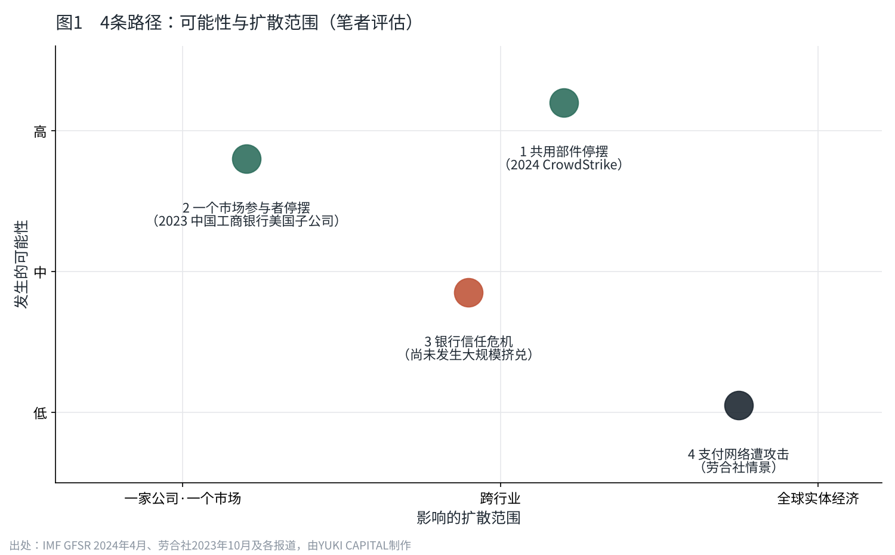
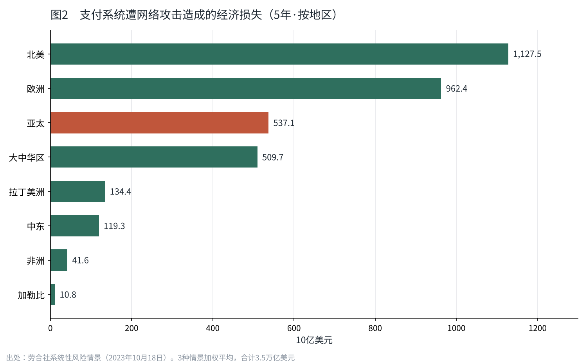

网络攻击会成为全球股市同时下跌的导火索吗
2026年10月23日，我在日本持有的4只银行股一起下跌了。同一周，GMO公布了一起可能影响26,739台服务器的非法入侵。
多数金融危机，都是从贷款坏账或利率骤变开始的。但是，以数据泄露或篡改为起点的下跌，还没有真正发生过。
本文依据国际机构和保险市场的一手资料，把网络攻击引发全球股市同时下跌的路径分成4条，并按发生的可能性排序。
金融已成为网络攻击最大的目标之一
国际货币基金组织（IMF）在2024年4月的《全球金融稳定报告》中，专门用一章讨论网络攻击对金融稳定的威胁。报告指出，网络攻击比疫情前增加了一倍以上。针对金融企业的攻击约占全部的五分之一，其中银行受到的威胁最大。
损失的规模也变了。IMF估算的“极端损失”规模自2017年以来增长了4倍以上，达到25亿美元（约168亿元人民币）。一次事件可能造成的损失上限，正在逐年提高。
日本的数字也指向同一方向。据东京商工调查，2025年上市公司及其子公司公布的180起个人信息泄露或丢失中，有116起（64.4%）是“病毒感染或非法入侵”造成的。2026年截至10月5日，超过100万条的大型泄露已经发生了10起。
为什么网络风险容易“同时”扩散
以往的金融风险，大多是按国家、按行业，有时间差地扩散。住房贷款的坏账传到全球的银行，花了以月、以年计的时间。
但是，如今的金融，全世界的企业共用着同样的云、同样的安全产品、同样的支付系统。一个部件出了问题，所有使用它的人会在同一时刻受到影响。即使你以为投资已经按国家和行业分散，背后也可能被同一个部件连在一起。
IMF的报告也把金融企业越来越依赖外部IT服务商，列为风险扩散的途径之一。报告还指出，拥有面向金融业的网络安全战略或监管的国家，只占被调查国家的一半左右。防守的机制，还没有跟上攻击扩散的方式。
过去的事件扩散到了什么程度
导致股价下跌或市场混乱的例子已经出现。不过，没有一起发展到“全球同时暴跌”。
2023年11月9日，中国工商银行的美国证券子公司遭到勒索软件攻击。美国国债交易的结算出现停滞，部分交易被转到其他渠道。这说明，一个市场参与者停下来，延误就会波及它的交易对手。美国国债在全球金融交易中被用作抵押品，它的结算延误直接关系到全球的资金流动。
2024年7月19日，并非攻击，而是安全公司CrowdStrike的更新故障，导致约850万台Windows电脑无法启动。航空、银行、医疗同时停摆。保险公司Parametrix估算，仅美国《财富》500强企业的直接损失就达54亿美元（约363亿元人民币）。《财富》500强中的航空公司全部受到影响，平均每家损失1.43亿美元（约9.62亿元人民币）。超过97%的设备恢复，花了大约一周时间。
即使不是攻击，只要一个共用的部件停下来，就会跨越行业和国境同时停摆。我认为，这正是网络风险与其他风险不同的地方。

按发生的可能性，给4条路径排序
我根据一手资料和过去的事件，把网络攻击导致股价下跌的路径分成4条。排序是我的评估，依据是有没有实际发生过的例子，以及国际机构和保险市场的估算。
| 排序 | 路径 | 实际案例 | 扩散方式 |
|---|---|---|---|
| 1 | 共用部件停摆（更新故障或攻击） | 2024年7月 CrowdStrike | 跨行业、跨国家停摆数日 |
| 2 | 一个市场参与者停摆（勒索软件） | 2023年11月 中国工商银行美国子公司 | 结算延误波及交易对手 |
| 3 | 银行的客户信息或余额遭到攻击，引发信任危机 | 尚未发生大规模挤兑（IMF） | 存款流出与银行股下跌 |
| 4 | 支付网络本身遭到攻击，全球经济停摆 | 保险市场的情景假设 | 扩散到全球实体经济 |
路径1和2已经发生过。停摆持续了几天，对股价的影响也是暂时的。关于路径3，IMF分析认为，美国中小银行在遭受网络攻击后，存款出现了温和但持续的流出；同时指出，大规模的“网络挤兑”还没有发生。
最坏的情景：支付网络停摆的时候
关于路径4，保险市场劳合社（Lloyd's）在2023年10月公布了一个情景。如果主要的支付系统因网络攻击停摆，全球经济在5年内的损失，按严重程度不同的3种情景加权平均，估算为3.5万亿美元（约23.5万亿元人民币）。
即使是最轻的情景，损失也有2.2万亿美元，发生概率为每年3.32%，也就是30年一遇。最严重的情景是千年一遇，损失高达16万亿美元。按国家看，美国损失1.1万亿美元，中国4,700亿美元，日本2,000亿美元。

30年一遇，这个数字并不小。按平均来算，一笔住房贷款的期限内就会遇到一次。
如果银行的余额被改写
我最关注的是路径3。银行是客户信息和资金信息绑在一起的地方。不仅是泄露，余额也有被改写的可能。
假设你以为有约213万元人民币（约316,256美元）的存款，屏幕上却显示为0。很多人会冲向银行。挤兑随之发生，而银行手里并没有足够付给所有人的现金。从那里开始，坏的连锁反应就来了。在2023年美国地区银行的倒闭中，存款通过社交媒体和手机转账，以前所未有的速度流出。信任的崩塌已经变快了。如果发生余额篡改，光是确认哪个数字才是真的就要花时间，不安会先一步扩散。
再进一步，如果银行、证券、航空同时停摆，世界并不是按照“互联网停了也能继续运转”的方式建造的。我认为，再往前就是从未经历过的领域。
我是这样看的
我认为，网络攻击成为全球股市同时下跌导火索的可能性相当大。如果排序，最先到来的大概不是对支付网络的大规模攻击，而是共用部件的停摆，或者银行的信任危机。
但是，我并没有因此决定卖出银行股。这一周，我持有的银行股1股也没有买卖。钱越多，我越把它放在系统停摆时也足够强的大型银行和证券公司。在自己的事业上也是同样的想法：会员信息只保留必要的部分，防守与其靠软件，不如考虑存放的地方。即使下跌的方式是新的，比起去猜行情，事先设计好钱放在哪里，更适合我。
接下来我要看的是，银行和证券公司在故障之后，多快、公布了什么。对于这种新的下跌方式，世界准备到了什么程度。我会把它和自己账户的数字一起记录下去。
出处
- IMF《Global Financial Stability Report, April 2024, Chapter 3: Cyber Risk: A Growing Concern for Macrofinancial Stability》 https://www.imf.org/en/blogs/articles/2024/04/09/rising-cyber-threats-pose-serious-concerns-for-financial-stability
- Lloyd's《Lloyd's systemic risk scenario reveals global economy exposed to $3.5trn from major cyber attack》（2023年10月18日） https://www.lloyds.com/about-lloyds/media-centre/press-releases/lloyds-systemic-risk-scenario-reveals-global-economy-exposed-to-3.5trn-from-major-cyber-attack
- SecurityWeek《97% of Devices Disrupted by CrowdStrike Restored as Insurer Estimates Billions in Losses》 https://www.securityweek.com/97-of-devices-disrupted-by-crowdstrike-restored-as-insurer-estimates-billions-in-losses/
- Dark Reading《Treasury Markets Disrupted by ICBC Ransomware Attack》（2023年11月9日） https://www.darkreading.com/attacks-breaches/treasury-markets-disrupted-from-icbc-ransomware-attack
- 东京商工调查（Web担当者Forum，日文）《2025年个人信息泄露受害人数3,063万人》 https://webtan.impress.co.jp/n/2026/02/06/52123
- ScanNetSecurity（日文）《上市公司个人信息泄露 2026年超过100万条已有10起》 https://scan.netsecurity.ne.jp/article/2026/10/21/56521.html
- GMO互联网集团《关于Onamae.com桌面云遭非法入侵（第3报）》（日文） https://internet.gmo/news/article/248/
- Federal Reserve《Review of the Federal Reserve's Supervision and Regulation of Silicon Valley Bank》（2023年4月） https://www.federalreserve.gov/publications/files/svb-review-20230428.pdf
照片：Nicholas Cappello／CHUTTERSNAP（Unsplash）。图表由YUKI CAPITAL制作
每天的数字与判断，记录在X上。